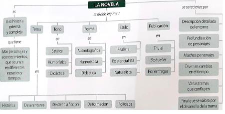

La Novela
Pertenece al género narrativo, sus historias son extensas y complejas.Involucra más personajes y acontecimientos, en diferentes espacios y tiempos, que los otros tipos de narraciones (cuento, mito, leyenda, fábula).
CARACTERÍSTICAS DE LA NOVELA
- Descripción detallada del entorno.
- Se profundiza en el carácter de los personajes.
- Tiene más personajes y se enfoca en algunos de ellos, dependiendo de la importancia en la trama.
- Se presentan más cambios en el tiempo: la historia generalmente no sigue un orden lineal de los eventos.
- Existen varias tramas que coinciden en una idea o un suceso común.
- El final de la novela no es tan impactante como el del cuento. Resalta el mundo que creó y desarrolló el autor a lo largo del relato.
TIPOS DE NOVELA
- Novela histórica: narración de hechos reales en una época, por lo general, lejana.Ejemplo: “El capitán Alatriste” de Arturo Pérez; “Las memorias de Adriano” de Marguerite Yourcenar.
- Novela de aventuras:argumento basado en un viaje, en el misterio o en el riesgo. Por logeneral, las acciones que ejecutan los personajes se sobreponen a otros componentes de latrama como la explicación del carácter de los personajes o el detalle del entorno.Ejemplo: “Los tres mosqueteros” de Alexandre Dumas;“Los viajes de Gulliver” de Jonathan Swift; “Veinte mil leguas de viaje submarino” de Julio Verne; “Moby Dick” Herman Melville.
- Novela de ciencia ficción: hechos y escenarios imaginarios que se distinguen por lareferencia a inventos científicos y sucesos de carácter futurista.Ejemplo: “1984” de George Orwell; “2001: Odisea al espacio” de Arthur C. Clarke; “Fahrenheit 451” de Ray Bradbury.
- Novela de formación: muestra el desarrollo físico, moral, psicológico y social delprotagonista desde su infancia hasta su madurez. Ejemplo: “Retrato del artista adolescente” de James Joyce; “La montaña mágica” de Thomas Mann.
- Novela policíaca: se resuelve un caso. El protagonista es un investigador que usa larazón para descubrir al criminal.Ejemplo: “Cartas sobre la mesa” de Agatha Christie; “El sabueso de los Baskerville” de Sir Arthur Conan Doyle; “La piedra lunar” de William Wilkie Collins.
